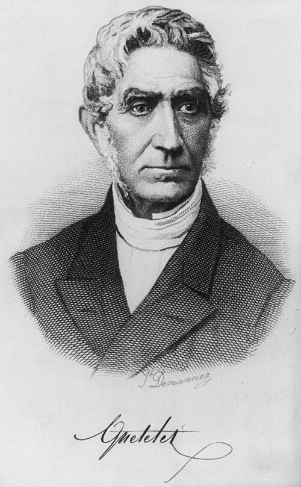
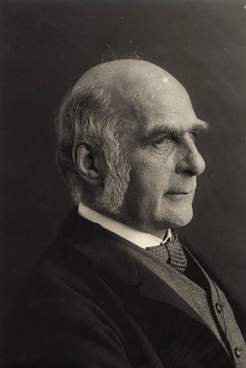

Essay · Statistics
釘に弾かれるだけの玉が、なぜ毎回同じ山を作るのか。「平均」という言葉の危うさと、それでも消えない秩序。
フランシス・ゴルトンが quincunx(後のゴルトン・ボード)を発案。二項分布が正規分布に収束する様子を、機械で初めて可視化した。翌 1874 年 2 月 27 日、王立研究所で公開実演。
同年、ウィーン万博が開幕。米国ではジェイ・クック商会の破綻を引き金に「1873 年恐慌」が起き、長期不況の始まりとなった。日本は太陽暦を採用。
「平均人 l'homme moyen」の概念自体は、1835 年にベルギーの天文学者アドルフ・ケトレーが先に提示していた。ゴルトンの機械は、それを証明する装置ではなく、問い直す装置になっていく。
健康診断で身長を測られ、「170 センチ、平均より少し高いですね」と告げられる。体重も、血圧も、視力も。私たちはことあるごとに「平均」と比べられ、自分の位置を知らされる。
考えてみると、私たちは「平均」という言葉を、妙にリアルなものとして受け取っている。「平均的な日本人男性」「平均的な家計支出」。けれど、正確に平均どおりの人間など、実際には一人もいない。
それなのに、何十万人の身長をグラフにすれば、必ずあの釣鐘型が現れる。誰もそこに立っていないはずの真ん中が、なぜ最も高く盛り上がるのか。
釘に弾かれるだけの玉が、毎回同じ山を作る。「平均的な人間」という言葉の危うさと、それでも現れる秩序を、1 球・100 球・1 万球のゴルトン・ボードで確かめる。
クラスの身長分布、工場で作られたネジの長さ、射撃練習の着弾位置。測りたいものが違っても、グラフに描けば似たような形が現れる。真ん中が一番高く、左右に対称に裾を引く、あの釣鐘型。これを正規分布正規分布平均の周りに左右対称な釣鐘型で分布する連続確率分布。測定誤差や身長など、「多数の小さな独立した揺らぎ」が重なる場面でよく現れる。ガウス分布とも呼ばれる。と呼ぶ。
正規分布の形は、たった二つの数字で完全に決まる。山の中心を決める μ（平均）と、山の横幅を決める σ（標準偏差、ばらつきの大きさ）だ。どちらもギリシャ文字で、統計の世界ではこの二文字が平均とばらつきを表す標準記号として定着している。以下の図でも断りなく出てくるので、先にその正体を示しておく。
図 1. 正規分布。平均 μ を中心に、±1 標準偏差（σ）に約 68%、±2σ に約 95% が収まる。
この曲線を最初に「人間」に当てはめたのは、1835 年、ベルギーの天文学者アドルフ・ケトレーAdolphe Quetelet（1796-1874）ベルギーの天文学者・数学者・統計学者。「平均人（l'homme moyen）」の概念を提唱し、統計学を社会科学に持ち込んだ最初の人物。BMI（Quetelet Index）の考案者でもある。だった。彼はもともと、天文観測の誤差を処理する「誤差の法則」として、この曲線を扱っていた。同じ星を何度も観測すると、真の位置を中心に誤差が釣鐘型に散らばる。ならば、人間の身長も、同じ法則に従うのではないか。

Adolphe Quetelet
1796-1874 · 天文学者／統計学者
ブリュッセル王立天文台を設立。1835 年『Sur l'homme et le développement de ses facultés（人間について）』で「平均人」の概念を提示し、統計学を社会に持ち込んだ最初の人物。後の BMI の基礎にもなる。
ケトレーはスコットランド兵 5,738 人の胸囲を調べ、その分布が釣鐘型を描くことを示した。天文観測と同じ曲線が、人体にも現れる。彼はここから大胆な一歩を踏み出す。では、その平均値そのものを、一人の理想的な人間として扱ってみたらどうか。
« L'homme moyen ... représente dans une nation tout ce qu'il y a de grand, de beau, et de bien. »
平均人は、ある国民が持つすべての偉大なもの、美しいもの、善きものを体現している。
— Adolphe Quetelet, Sur l'homme (1835)
「平均的な日本人」「平均的な家計」という言い回しは、実はここから始まっている。ケトレー以前、平均値は単なる計算の副産物だった。ケトレー以後、平均値は一人の人物になった。
この発想を受け継いで、統計をさらに尖らせたのが、英国のフランシス・ゴルトンFrancis Galton（1822-1911）英国の統計学者・人類学者。ダーウィンの従兄弟。「回帰（regression）」「相関（correlation）」という統計用語を生み出した一方、1883 年に「優生学（eugenics）」を造語し、その創始者ともなった、毀誉褒貶のはげしい人物。である。ゴルトンは平均からのずれに関心を持った。ばらつきは雑音ではなく、順位付けの根拠である、と。そして 1873 年、彼は小さな木の板に釘を打ち、真ん中の一点から玉を落とす装置を作る。

Francis Galton
1822-1911 · 統計学者／人類学者
ダーウィンの従兄弟。指紋識別、回帰分析、相関の概念を生み出した近代統計学の祖の一人。同時に 1883 年に「優生学」を造語し、その創始者にもなった。ゴルトン・ボードは彼の発明した教育装置。
✕ 誤解
「平均的な人間」は、最も多数派で、いわばいちばん人間らしい人間を指す。
○ 実際は
平均は分布の重心であって、実在する誰かを指しているわけではない。身長・体重・座高などを同時に平均にぴったり合わせた人間は、統計上ほぼ存在しない。
✕ 誤解
大量のデータを集めれば、どんなものでも釣鐘型の正規分布になる。
○ 実際は
正規分布が現れるのは、たくさんの小さな原因がばらばらに足し合わさって 1 つの結果を決めているときだけだ。たとえば身長は、無数の遺伝子・栄養・ホルモン・環境の小さなズレが加算で効いて決まる——だから釣鐘型になる。ところが富や地震の規模、本の売上は違う。ひとつの巨大な要因（大ヒット、巨大地震、資産の掛け算的増加）が全体を支配してしまう。こういう分布は裾が分厚く、「平均」という言葉自体が意味を失う。
図 2. 68-95-99.7 ルール。正規分布なら、平均から ±1σ に 68.3%、±2σ に 95.4%、±3σ に 99.7% が入る。ここから外れる値は、全体の 0.3% しか存在しない。
では、実際に玉を落としてみよう。下のパネルは、ゴルトンが 1873 年に作った quincunxquincunx（クィンカンクス）ラテン語で「5 点」の意。古代ローマの貨幣単位（1 アス＝12 ウンキア、その 12 分の 5 硬貨の名称）に由来し、サイコロの 5 の目のように点を配置した紋様を指す語だった。ゴルトンは釘を千鳥格子——隣り合う段が互い違いに並ぶ五の目状——に打った装置に、この名をあてた。——板の上に釘を三角形に打ち並べ、上の漏斗（ロート）から玉を 1 粒ずつ落とす装置——を、そのまま計算機の中に再現したものだ。玉は釘に当たるたびに左か右へ弾かれる。これを n 段くり返した後、底のビン（仕切られた箱）に積もっていく。各段での「左か右か」は、二項分布二項分布成功確率 p の独立試行を n 回繰り返したとき、成功回数がどう分布するかを表す確率分布。コインを n 回投げて表が出た回数、などが典型例。釘に当たって左右に分岐するゴルトン・ボードの構造そのもの。そのものの構造を持っている。
まず下のパネルの [ +1 球 ] を押してみてほしい。1 粒の玉がロートから落ちて、釘を弾かれながら降りていく。どのビンに入るかは、まったく予測がつかない。次に [ +100 球 ]——まだ偏りが大きく、真ん中が少し盛り上がる程度にしか見えない。そして [ +1,000 球 ]、[ +10,000 球 ]。そこで初めて、あの釣鐘型が姿を現す。一つ一つの玉の運命は偶然のはずなのに、全体としては寸分違わず同じ形になる。
さらに、スライダーで p(right)（右に行く確率）を動かしてみてほしい。偏らせれば山の中心位置は左右にずれる。だが——形そのものは崩れない。段数 n を変えれば山の幅も変わるが、やはり形は崩れない。これが中心極限定理が保証していることの、おそらく最も直接的な証拠だ。
Drop — 玉を落とす。まず +1 から、次に +100 へ
Parameters — スライダーで偏りと段数を変える
▸ +1 と +100 は全球を物理演算で可視化する。+1,000 以上では、先頭 150 球を物理演算で落としながら、残りを同じ二項分布乱数で高速に積む（n 万球をリアルタイム物理で捌くのは重い）。どちらも確率モデルは同一なので、最終的な分布の形は変わらない。
装置を動かしているうちに、奇妙なことに気づく。玉は一粒も同じ経路を辿らない。なのに、最終的な山の形は、ほとんど変わらない。偶然と秩序が同居している、と言ってしまうと安っぽいが、本当にそう見える。この「同居」を数式で保証するのが、次に見る中心極限定理である。
ゴルトン・ボードを数学的に見ると、各釘は独立なコイン投げである。n 段の板を抜ける玉は、n 回のコイン投げの結果を位置に換算していることになる。ある場所に玉がたまる確率は、その場所に至る経路の数を、全経路数で割ったものだ。そしてこの「経路の数」の表こそが、小学校で誰もが目にしたあの三角形である。
図 3. 4 段の板なら、真ん中のビンには 6 通りの経路がある。両端はそれぞれ 1 通りしかない。「真ん中に集中する」のは、経路の数がそこで最大になるからだ。
ところで——この三角形、小学校で見て以来あまり振り返ることもないのだが、少しだけ脇道に入って眺めておきたい。まず名前の話から。「パスカル」の名を冠しているが、パスカルがこれを発見したわけではない。中国では 11 世紀に賈憲（か けん）賈憲（Jia Xian, 11 世紀）北宋の数学者。開平法・開立法の計算補助として、後に「楊輝三角」と呼ばれる三角形を図表にまとめた。原典は散逸したが、楊輝の著作に引用されて伝わった。が、13 世紀には楊輝（よう き）楊輝（Yang Hui, 1238-1298）南宋の数学者。『詳解九章算法』(1261) で賈憲の三角形を紹介し、中国ではこの三角形を「楊輝三角」と呼ぶ。が、同じ三角形を論じている。インドでは紀元前のピンガラが、ペルシアでは 10 世紀のアル＝カラジal-Karaji（953-1029 頃）ペルシアの数学者。二項展開の係数としてこの三角形を扱い、数学的帰納法の萌芽も示した。が、それぞれ独立に見つけている。ブレーズ・パスカルが 1654 年の『三角形について』でこれを体系的にまとめ、確率論の起点のひとつに据えたとき、西洋数学史の中心にその名前が刻まれた。
さて、4 段だけでは味気ないので、もう少し下まで書き下してみる。各段の両端は必ず 1、内側の各数は「すぐ上の左右の数の合計」で決まる——それだけの規則で、次の形が出る。
図 4. 10 段まで書き下したパスカルの三角形。あらかじめ、奇数を赤・偶数をグレーで色分けしておいた。
ちなみに——ここからが少し奇妙な話。赤（奇数）のセルだけを残して、灰色（偶数）を抜いていくと、思いがけない規則が見えてくる。10 段ではまだ気づきにくいが、32 段まで大きくするとはっきり現れる。
図 5. 32 段のパスカル三角形で、2 で割った余りが 1 の要素だけを塗った図。シェルピンスキー三角形と呼ばれるフラクタル——一つの三角形が自分と同じ形を内側に抱える自己相似の図形——が姿を現す。
これが偶然ではないことは、19 世紀にクンマーErnst Kummer（1810-1893）ドイツの数学者。1852 年、二項係数 C(n,k) が素数 p で何回割り切れるかは、n = k + (n-k) を p 進数で計算したときの「繰り上がりの回数」に等しいことを示した（クンマーの定理）。とリュカÉdouard Lucas（1842-1891）フランスの数学者。1878 年、C(n,k) mod p を n, k の p 進展開の各桁の二項係数の積で与える定理を証明（リュカの定理）。が証明した。C(n, k) が奇数になるのは、n と k を 2 進数で書いたとき、k の各桁の 1 が n の同じ桁にも 1 として現れる場合——それに限る。二進数の桁構造と、「一つの塊が自分の内側に自分と同じ形を抱える」自己相似性が、ここで一本の線で繋がっている。ゴルトン・ボードの釘の上を歩く玉は、このフラクタル構造の上を歩いている、ともいえる。各段のコイン投げは 2 進数の 1 桁を決める操作であり、n 段を通り抜けた玉の位置は n 桁の 2 進数と同型だからだ。
——閑話休題。本題に戻ろう。
段数 n を大きくしていくと、パスカル三角形の最下段の並び（＝ゴルトン・ボードのビン分布）はどんどん滑らかになる。n を無限に大きくした極限で、完全な釣鐘型——正規分布——に収束する。これが中心極限定理中心極限定理 (CLT)独立な確率変数の和（または平均）は、個々の分布によらず、試行回数が十分多ければ正規分布に近づく、という定理。1733 年のド・モアブル、1812 年のラプラスを経て、1901 年にリャプノフが現代形を証明した。の主張だ。
数式で書くと、n 段・右確率 p のゴルトン・ボードで玉が落ちる位置（右に行った回数）は、平均 np、分散 np(1−p) の二項分布に従う。n が十分大きければ、これが平均 np、標準偏差 √(np(1−p)) の正規分布で近似できる——ド・モアブルが 1733 年に示した結果である。ゴルトンの機械はこの数式を、ひと目で納得できる物体に置き換えたわけだ。
図 6. 二項分布は、n を大きくするほど正規分布に近づく。これを最初に厳密に証明したのは 1733 年のアブラーム・ド・モアブルだった。
大事なのは、中心極限定理が成り立つための条件だ。ひとつは独立性——各釘での跳ね返りは前後の釘と関係しない。もうひとつは、個々の寄与が十分小さいこと——一つの釘が玉の最終位置を決めてしまうようでは困る。この二つが揃っているとき、結果は必ず釣鐘型に落ち着く。
もう少し噛み砕いてみる。玉の最終位置は、結局のところ「左右の決定」を n 回分合計した結果だ。釘一つひとつでの決定は、独立——前の釘がどう弾いたかは、次の釘の動作に影響しない——で、かつ、寄与が小さい——どの釘も、最終位置を ±colGap／2 しか動かせない。この「独立で小さな寄与の加算」という構造さえあれば、元の個々の確率変数がどんな分布でも構わない。コイン投げでも、歪んだ硬貨でも、連続的な揺らぎでも、十分な数を足し合わせれば必ず釣鐘型に収束する。これが中心極限定理の強力さだ。
身長が釣鐘型になるのは、身長が数え切れない小さな要因（無数の遺伝子、栄養、ホルモン、環境）の加算で決まるからだ。測定誤差が釣鐘型になるのも、誤差が無数の小さな揺らぎの合成だから。IQ スコア、血圧、気温の月平均、生まれたばかりの子牛の体重——ゴルトンの機械と同じ構造を裏に持つ現象なら、すべて釣鐘型になる。ゴルトン・ボードの釘は、それらの要因の比喩として機能している。
逆に、「独立で小さな加算」が壊れるとき、釣鐘型は現れない。一つの巨大な要因が結果を支配するとき——ベストセラー 1 冊が年間売上の大半を作る、マグニチュード 9 の地震が全地震エネルギーの大半を占める、少数の長者が国富の大半を持つ——そういう場面では、分布の裾が分厚くなり、正規分布で近似すると大きく外れる。要因どうしが強く相関しているとき（景気、疫病、金融危機の伝播）も、単純な加算では記述できなくなる。正規分布は、偶然を記述する万能の道具ではない。特定の構造——独立で小さな寄与の足し合わせ——を持った偶然にだけ、よく効く道具である。
1733
De Moivre — 二項分布の正規近似
フランス出身の数学者アブラーム・ド・モアブルが、コイン投げを多数回繰り返した場合の分布を正規曲線で近似できることを示す。英語版は 1738 年の『The Doctrine of Chances』第 2 版に収録。当時はほとんど注目されなかった。
1812
Laplace — 『確率の解析理論』で一般化
ピエール=シモン・ラプラスが『Théorie analytique des probabilités』でド・モアブルの結果を発展させ、より広い条件下で同じ振る舞いが成り立つことを示した。この本で中心極限定理の原型が提示される。
1835
Quetelet — 平均人という発明
アドルフ・ケトレーが『Sur l'homme』で「l'homme moyen（平均人）」の概念を提示。天文学の「誤差の法則」を人間に適用し、統計を社会科学に持ち込む。ここから「平均的な◯◯」という言い回しが広がっていく。
1873
Galton — quincunx を発案
フランシス・ゴルトンが釘の板と玉でできた教育装置を発案。翌 1874 年 2 月 27 日、王立研究所で公開実演。中心極限定理が、はじめて機械で目に見える現象になった。
1889
Galton — 『Natural Inheritance』
ゴルトンが 2 段型の quincunx を提案。親世代の分布を上段、子世代の分布を下段とすることで、遺伝における「平均への回帰」を可視化した。この装置から「回帰（regression）」という用語が生まれる。
1901
Lyapunov — 現代形の証明
ロシアの数学者アレクサンドル・リャプノフが、特性関数を使って中心極限定理の一般形を厳密に証明。ここで中心極限定理は数学の定理として完成した。
ここまでは、ゴルトン・ボードの物語である。だが話はこれで終わらない。中心極限定理は、私たちに何を保証してくれて、何を保証してくれないのか。20 世紀の終わりから 21 世紀にかけて、この問いを正面から突きつけた人物がいる。元デリバティブ・トレーダーで哲学的エッセイストのナシム・ニコラス・タレブだ。彼は世界を二つの「土地」に分けた。MediocristanMediocristan（メディオクリスタン）ラテン語の mediocris（中位）＋ ペルシャ語由来の -stan（〜の土地）を合わせたタレブの造語。個々の観測がどれも同程度の重みしか持たず、一つの外れ値が全体を大きく動かすことのない世界。身長・体重・IQ・測定誤差・試験点数などが住人。 と ExtremistanExtremistan（エクストレミスタン）ラテン語の extremus（極端）＋ -stan。たった一つの観測が全体を支配しうる世界。富、株価、著書の売上、都市人口、地震のエネルギー、ウェブサイトのアクセス数などが住人。裾が「分厚い」分布——冪乗則・パレート分布・対数正規分布——で記述される。 である。
"Mediocristan is where we must endure the tyranny of the collective, the routine, the obvious, and the predicted; Extremistan is where we are subjected to the tyranny of the singular, the accidental, the unseen, and the unpredicted."
Mediocristan は、集団的なもの、日常的なもの、明白なもの、予測可能なものの専制に耐えなければならない土地。Extremistan は、単一のもの、偶発的なもの、見えないもの、予測不能なものの専制に服従させられる土地である。
— Nassim Nicholas Taleb, The Black Swan (2007)
身長が 3 メートルの人間は存在しない。平均身長を測り続ける限り、大きな外れ値が全体の平均を吹き飛ばすことはない。これが Mediocristan の安全性だ。だが、株価や世帯収入はそうではない。上位 1% の富豪が全体の平均を大きく歪める。地震は、小さな揺れが数千回起きても、一度のマグニチュード 9 ですべてが決まる。本の売上は、1 冊のベストセラーが、他の何千冊の総売上を上回る。これが Extremistan の本性である。
ここで当然の疑問が生まれる。富を稼ぐ人の日々の決断も、無数の小さな判断（仕入れ、交渉、投資、人脈）の積み重ねではないのか。だとすれば、これもまた「独立で小さな寄与の加算」として釣鐘型になるのでは——と。
答えは No だが、その理由を一言で言うと、「加算なのか、掛け算なのか」である。身長は加算だ。遺伝子・栄養・ホルモンの小さな貢献が足し算で合わさる。だが富は掛け算で動く。複利、事業の規模拡大、投資収益——Xt+1 = Xt(1 + r) という式は、前の年の富に比例して次の年の富が決まることを意味する。掛け算を繰り返した結果は、正規分布ではなく対数正規分布対数正規分布（log-normal distribution）X の対数 log(X) が正規分布に従うような連続確率分布。倍々に成長するプロセス（株価・企業規模・生物の体重など）の近似として広く用いられる。1931 年にフランスの統計学者ロベール・ジブラが「比例効果の法則（Gibrat's law）」として提示した。加算的プロセスが正規分布になるのと対称に、掛け算的プロセスは対数正規分布になる。になり、裾は遥かに厚くなる。log を取って初めて釣鐘型が戻ってくる、という意味で、身長と富はそもそも同じ土俵に載っていない。
この「掛け算で動く」という土台の上に、さらに二つの事情が重なる。一つは、独立性の破れ。顧客が顧客を呼び、評判が評判を作る（マシュー効果マシュー効果（Matthew effect）社会学者 Robert K. Merton が 1968 年に命名。新約聖書マタイ伝「持てる者はさらに与えられ、持たざる者は持つものまでも取り上げられる」に由来する。科学的成果の引用数、富、評判、ネットワークのハブ化などに広く見られる「勝者総取り」の正のフィードバック機構。）。ひとつの成功は次の成功の確率を引き上げる——これはゴルトン・ボードの独立な釘とはまったく違う構造だ。掛け算に正のフィードバックが加わると、分布はさらに極端な形をとる（上位テールはべき乗則べき乗則／パレート分布（power law / Pareto distribution）頻度 f が値 x に対して f ∝ x−α の形をとる、極度に不平等な分布。都市人口、地震のエネルギー、所得上位テール、書籍売上、ウェブサイトへの被リンク数などに現れる。イタリアの経済学者ヴィルフレド・パレートが 19 世紀末に所得分布の分析で見出し、マシュー効果や優先的選択などがその生成メカニズムとして知られる。の形になりやすい）。もう一つは、巨大要因の存在。ベストセラー 1 冊、IPO 1 回、バイラル動画 1 本が、経済的帰結の大半を決めることがある。これは「個々の寄与が同程度に小さい」という中心極限定理のもう一つの要請（リンデベルグ条件Lindeberg 条件中心極限定理が成立するための代表的な十分条件（1922 年、フィンランドの数学者ヤルル・リンデベルグが提示）。独立な確率変数の和が正規分布に収束するには、個々の変数の分散が全体分散に対して「無視できるほど小さい」こと——どの一つの変数も全体を支配しないこと——が要請される。単一の巨大な観測があると、この条件は崩れる。）を破る。
まとめると、多要因の複雑な重なりは、釣鐘型が生まれるための必要条件ではあるが、十分条件ではない。加算で、独立で、どれも同程度に小さい——この三点が揃ったときだけ、釣鐘型が現れる。富はそのどれも満たしていない。そこが富と身長の、分かれ道だ。
図 7. 同じ「分布」でも、振る舞いはまったく違う。右側は冪乗則（power law）に従う分布で、正規分布とは別種。「平均」という言葉の意味も別物になる。
ゴルトン・ボードの「救済」というのは、ここにある。装置の中では、どの釘もほぼ同じ重みで玉を弾く。これは独立で、個々の寄与が小さいという中心極限定理の条件を、物理的に強制している。だから必ず釣鐘型が出る。だが現実世界では、そもそもその条件を満たしているかどうかを確かめる作業が先に来なければならない。身長ならよい。富は駄目だ。
ケトレーの「平均人」は、こう言い換えられる。正規分布が成り立つ世界では、平均は確かに分布の重心として意味を持つ。ただしそれは一人の人間ではなく、あくまで集団のばらつきの中心点である。21 世紀に入って教育心理学者トッド・ローズは『The End of Average』で、個人を平均に合わせる設計——標準化された教室、平均体型を前提としたコックピット——がことごとく破綻してきた事例を並べた。平均人を作れば作るほど、誰もそこに一致しないことが明らかになっていった、と。
文化への登場
米テレビ番組『The Price Is Right』の Plinko
1983 年から続くロングセラー企画。出演者が円盤を板の上から落とすと、釘に弾かれて下部のスロットに落ちる。これはゴルトン・ボードそのもので、中央の高額賞金に向かって確率が集中するように設計されている。
Nassim Nicholas Taleb『The Black Swan』(2007)
ウォール街の元トレーダーが、金融工学が正規分布を前提にしていることを痛烈に批判した本。2008 年のリーマン・ショックは、まさに Extremistan の現象を Mediocristan の道具で扱おうとした帰結だったと論じられる。
Todd Rose『The End of Average』(2016)
ハーバード教育大学院の研究者による著作。1950 年代の米空軍がパイロット用コックピットを「平均体型」に合わせて設計したところ、適合者が全パイロットの 0 人だったという逸話から始まる。平均人批判の入門書として広く読まれる。
Sur l'homme et le développement de ses facultés
「平均人（l'homme moyen）」の概念を提示した原典。天文学の誤差論を人間に適用した最初の体系的な試み。
ゴルトン・ボードが一般向けに詳述された書。「回帰（regression）」の概念もここで提示される。全文がオンラインで読める。
The quincunx: history and mathematics
quincunx の歴史を一次資料（書簡・講演記録）から丁寧に辿った論考。1873 年発案、1874 年公開の年号根拠。
The Black Swan: The Impact of the Highly Improbable
Mediocristan / Extremistan の対比を提示。金融や社会科学における正規分布の誤用を痛烈に批判する。
「平均人」を前提にした設計がどれほど個人を取りこぼしてきたかを、軍事・教育・医療の具体例から示した著作。
装置の構造、年号、歴史的背景、数学的記述がまとまっている。Plinko との比較にも触れている。
Central limit theorem — Wikipedia
De Moivre 1733 → Laplace 1812 → Lyapunov 1901 の系譜が要約されている。
📌 この記事について
quincunx の発案年（1873 年）と公開実演日（1874 年 2 月 27 日）は、Stigler 2001 が書簡・講演記録から特定した日付に基づく。ケトレーの胸囲データは『Sur l'homme』第 2 巻に記載がある。「平均人」への批判は Todd Rose 2016 を、Mediocristan / Extremistan の概念は Taleb 2007 をそれぞれ主要な出典としている。中心極限定理の数式化は標準的な確率論の教科書による。
e. Tamaki